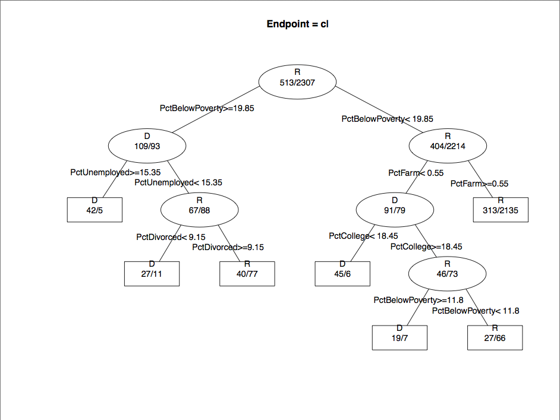
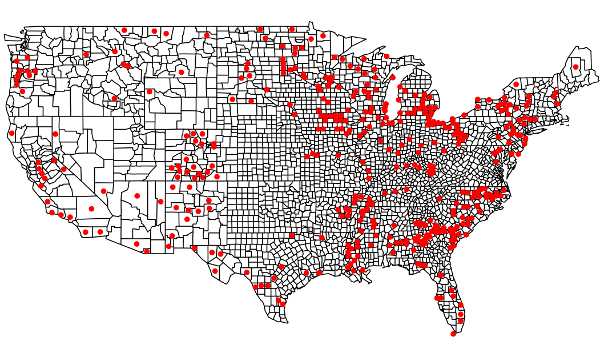
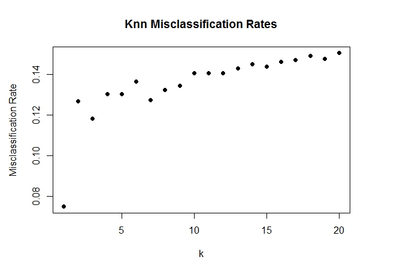
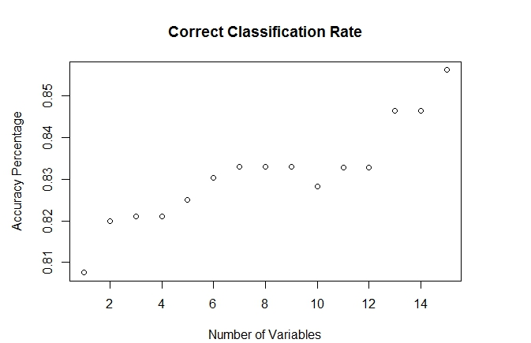

Jason Zhang, Jeremy Young, Michael Tran, Patrick Lin
3A Plot

Plot of Rpart classification tree
4A Plot 1

Counties incorrectly predicted by both KNN and RPart
4A Plot 2

KNN error rates for various values of k.
4A Plot 4

4B Fancy Map
Party vote shift from '04 to '12 election. Arrows signify an increase in voting percentage from '04 to '12, with red corresponding to Republicans and blue to Democrats. The biggest increases are in the South, where we see the Democrats gaining in the Southeastern states and the Republicans winning more voters in the region around the Appalachian states, AR, and eastern TX.